복잡한 업무 데이터를 직관적인 UI로 만드는 개발자, 최혜조입니다.
React · Next.js · TypeScript를 중심으로 금융·ERP·산업 운영 시스템을 개발합니다.
배너의 간단한 미리보기입니다. 전체 프로필 내용은 README.md를 참고하고, 최종 렌더링은 GitHub Preview에서 확인하세요.
React · Next.js · TypeScript를 중심으로 금융·ERP·산업 운영 시스템을 개발합니다.
배너의 간단한 미리보기입니다. 전체 프로필 내용은 README.md를 참고하고, 최종 렌더링은 GitHub Preview에서 확인하세요.